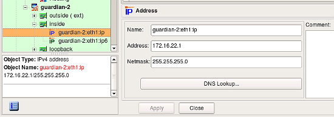
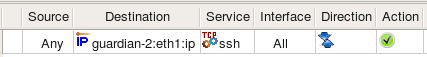
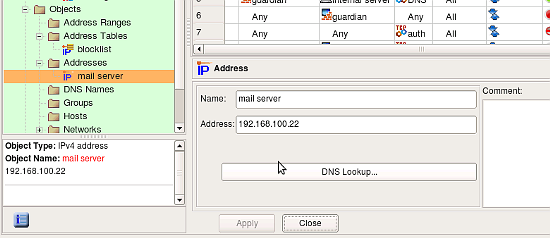
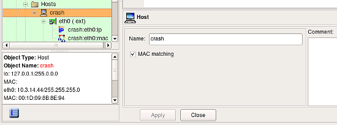
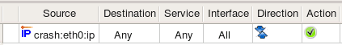
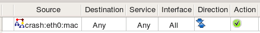
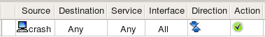
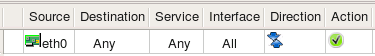
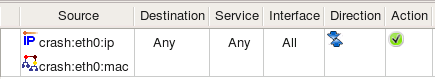

http://www.fwbuilder.org
| Author: vadim@fwbuilder.org http://www.fwbuilder.org |
This article continues the series of articles on Fireall Builder, a graphical firewall configuration and management tool that supports many Open Source firewall platforms as well as Cisco IOS access lists and Cisco ASA (PIX). Firewall Builder was introduced on this site earlier with articles Getting Started With Firewall Builder, Using Built-In Revision Control In Firewall Builder, Using Built-in Policy Installer in Firewall Builder, Using Firewall Object In Firewall Builder. This article demonstrates how you can work with IPv4, IPv6 and MAC Address objects in Firewall Builder.
More information on Firewall Builder, pre-built binary packages and source code, documentation and Firewall Builder Cookbook can be found on the project web site at www.fwbuilder.org. Watch Project Blog for announcements and articles on all aspects of using Firewall Builder.
The regular address object describes single IPv4 address. It can be a child of an interface object, in which case it represents its IP address and netmask, or it can be used as a standalone object. In the latter case it does not have netmask and is located in the Objects/Addresses branch of the objects tree.
In this case this object is located directly under the interface object. This could be interface of a Host or a Firewall object. To create this kind of an Address, use context menu associated with the Interface (right mouse click on the Interface object in the tree to open the menu).
Its dialog provides the following entry fields:
Note: A typical error is to interpret this object as an address of the subnet to which the interface of the host or flrewall belongs. This object represents an address of the interface, not a network address. (So, 192.168.1.1, not 192.168.1.0)
Consider rule as shown on the screenshot below where we use IPv4 address shown on the screenshot above (remember, it belongs to the interface):
In case of iptables Firewall Builder generates the following command from this rule:
$IPTABLES -A INPUT -p tcp -m tcp -d 172.16.22.1 --dport 22 -m state --state NEW -j ACCEPT
Note how even though the Address object has a netmask, generated command matches its address as a host address. This is because the netmask is only used to describe subnet the interface is connected to. When this address object is used in a rule, it is understood that the intention is to match the address of the interface it belongs to rather than any address on the subnet. Use Network object if you need to match whole subnet.
This iptables rule was placed in the INPUT chain because object in the "Destination" was an address of an interface of the firewall. While processing the policy for the iptables target firewall platform, Firewall Builder compares addresses in source and destination of a rule to the addresses of all interfaces of the firewall to find rules that control access to and from the firewall and places them into INPUT or OUTPUT chains. This is only necessary for iptables.
In this case this object is located in the Objects / Addresses part of the objects tree and does not have netmask entry field. To create this kind of an Address, use main New Object menu item New Address or context menu associated with the Addresses folder in the tree (right mouse click on the Interface object in the tree to open the menu).
Dialog fields Name, Address and Comment have the same purpose and properties as in the case of the Address object used to describe an addresses of an interface.
DNS Lookup button can be used to automatically populate the address field using DNS query. The program runs DNS query for the "A" record with the name of the Address object. The name does not have to match any DNS record if you never plan to use this feature and can populate the address manually. DNS query function is just a convenience, but to use it, the name of the object must match DNS record.
The IPv6 address object is similar to the IPv4 address object. Just like IPv4 address, it can be used both as a child of an interface object or as stand-alone.
If it is used to describe IPv6 address of an interface, it has a netmask represented as bit length. Unlike with IPv4 address object, netmask of IPv6 is never represented as full colon-separated string of octets.
In this case this object is located in the Objects / Addresses part of the objects tree (the same place where stand-alone IPv4 addresses are located) and does not have netmask entry field. To create this kind of an Address, use main New Object menu item New Address IPv6 or context menu associated with the Addresses folder in the tree (right mouse click on the Interface object in the tree to open the menu).
Policy compilers treat IPv6 addresses in policy rules according to the same algorithms as those for IPv4 rules. For example, just like with IPv4, compiler for iptables checks if address matches address of any interface of the firewall to determine if the rule should be placed in INPUT or OUTPUT chain.
Consider rule as shown on the screenshot below where we use two IPv6 address objects. One object belongs to the interface inside of the firewall while another is IPv6 address of the project's web site.

For iptables, Firewall Builder generates the following commands from this rule:
$IP6TABLES -A INPUT -p tcp -m tcp -d fe80::21d:9ff:fe8b:8e94 --dport 80 -m state --state NEW -j ACCEPT
$IP6TABLES -A FORWARD -p tcp -m tcp -d 2001:470:1f0e:162::2 --dport 80 -m state --state NEW -j ACCEPT
The rule that matches address described by object guardian-2:eth1:ipv6 went to the INPUT chain because compiler detected that this rule matches packets that are headed for the firewall itself, which iptables inspects in the INPUT chain. Rule that matches address described by the object ipv6.fwbuilder.org went to the FORWARD chain because these packets go through the firewall.
The Physical Address object describes the hardware or media address. For Ethernet this would be the MAC address of the interface. Currently only Ethernet MAC addresses are supported but support for other kinds may be added in the future. Physical Address object can only be a child of an interfaces, it can not exist as a stand-alone object. To create this kind of address object, use context menu associated with the interface object, item "Add MAC Address". Only one Physical Address object is allowed per interface, the program enforces this restriction. If you create Firewall or Host object using SNMP discovery, all interfaces will be automatically populated with their MAC addresses.
Only a few flrewall platforms really support physical address flltering. Currently Netfllter/iptables is the only flrewall platform that can do it and is supported by Firewall Builder.
if the Interface object that has multiple Address and Physical Address child objects is used in the policy or the NAT rule element (either Source or Destination), then the policy compiler tries to generate a rule using all of them. Compiler actually does this by generating multiple rules using each address in turn. This roughly corresponds to using logical operation "OR" on these addresses: if our interface had two addresses Address1 and Address2, then the generated rule would match if address in the packet is either Address1 OR Address2. The case of a Physical Address is different though. If the Interface has a physical address, then compiler tries to build a set of rules that matches on combination of each IP address and its MAC address. The reason for this change is as follows:
Suppose we have a very important host on the network. We create a Host object, then add an interface to it. The interface should have both Address and Physical Address objects as shown on the following screenshot (these two child objects are visible in the tree under the Interface eth0):
Note how checkbox "MAC matching" in the Host object dialog is checked, this makes compiler use MAC addresses of the interfaces of this host.
Because this is a very important host, we would like to be sure that packets whose source IP is that of this host are really coming from it and are not spoofed. The best way to achieve this goal is to use strong authentication, for example with IPSEC protocol. Using IPSEC is outside the scope of this document though; our goal right now is to show that inspecting MAC address of the packet can improve security.
Both the real packet originated from this host and a spoofed packet have a source IP address of the interface of this host, but a source MAC address is going to be different if spooflng is going on. We can use this to catch and drop spoofed packets. Here are three possible ways to build security policy in this situation:
Using only Address object in the rule element. This means the flrewall inspects only IP address and ignores the MAC address of the packets.
Firewall Builder generates the following simple iptables command for this rule:
$IPTABLES -A FORWARD -s 10.3.14.44 -m state --state NEW -j ACCEPT
Using only Physical Address object. A rule built this way permits all kinds of trafflc coming from the trusted host even if its IP address changes.
For this rule, the following iptables command is generated:
$IPTABLES -A FORWARD -m mac --mac-source 00:1D:09:8B:8E:94 -m state --state NEW -j ACCEPT
Using Host or Interface object. This way we end up with a rule that matches on a combination of the IP address and MAC address. This may be used as a sophisticated anti-spooflng rule.
 For this rule, the following iptables command is generated:
$IPTABLES -A FORWARD -m mac --mac-source 00:1D:09:8B:8E:94 -s 10.3.14.44 -m state --state NEW -j ACCEPT
Using Address and Physical Address objects in a rule is not the same as using a Host or Interface object to which these Address and Physical Address belong. Here is what happens if we put objects representing IP address and MAC address in the rule:
For this rule, the following iptables command is generated:
$IPTABLES -A FORWARD -s 10.3.14.44 -m state --state NEW -j ACCEPT
$IPTABLES -A FORWARD -m mac --mac-source 00:1D:09:8B:8E:94 -m state --state NEW -j ACCEPT
Using multiple objects in the rule element is like bundling them together using logical operation OR. If put Address and Physical Address in the rule like in the screenshot above, we end up with policy matching packets that have the source address 10.3.14.44 or MAC address 00:1D:09:8B:8E:94, but not necessarily both at the same time. Any host that manages to pretend to have the IP address 10.3.14.44 would be able to send packets through our flrewall even if its MAC address is different. To achieve our goal and make sure packets with the source IP 10.3.14.44 really belong to our important host, we should be checking its IP address and MAC address at the same time and let a packet through only if its IP address AND MAC address are what we expect them to be. That is why Firewall Builder treats physical addresses differently and generates flrewall code that inspects both IP address and physical address.
Firewall Builder generates flrewall code to inspect MAC address only for Host objects with the option "MAC address flltering" turned on. If this option is off, the Physical Address object will be ignored even if it is present in the Host object’s Interface. This is because Host objects created using the Network Discovery Druid are populated with both IP address and MAC address information which is available through SNMP query, but inspection of MAC addresses is rarely needed. You can use the MAC address flltering option in the Host object to specify that you want the MAC address to be verifled for the host.
Target firewall imposes certain restrictions on the ruels matching MAC address, for example only source MAC address can be matched. Firewall Builder is aware of these restrictions, policy compiler will issue an error if Physical Address object is used in a rule that would lead to an impossible iptables command.